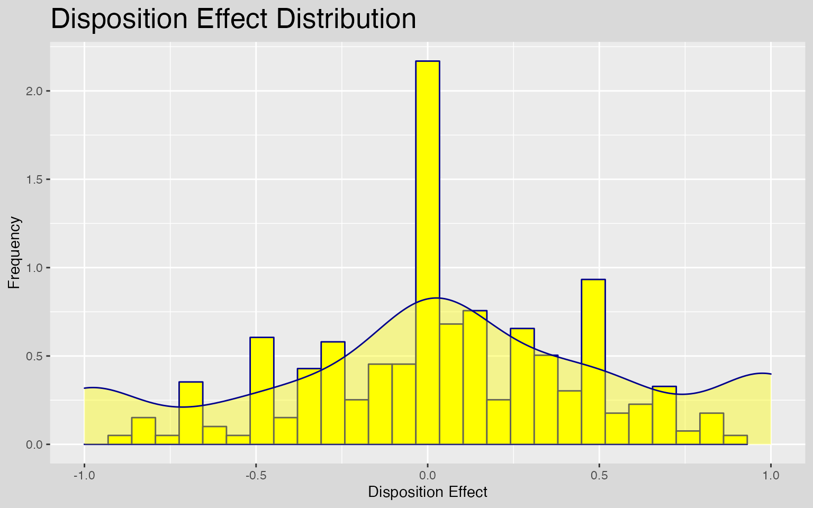
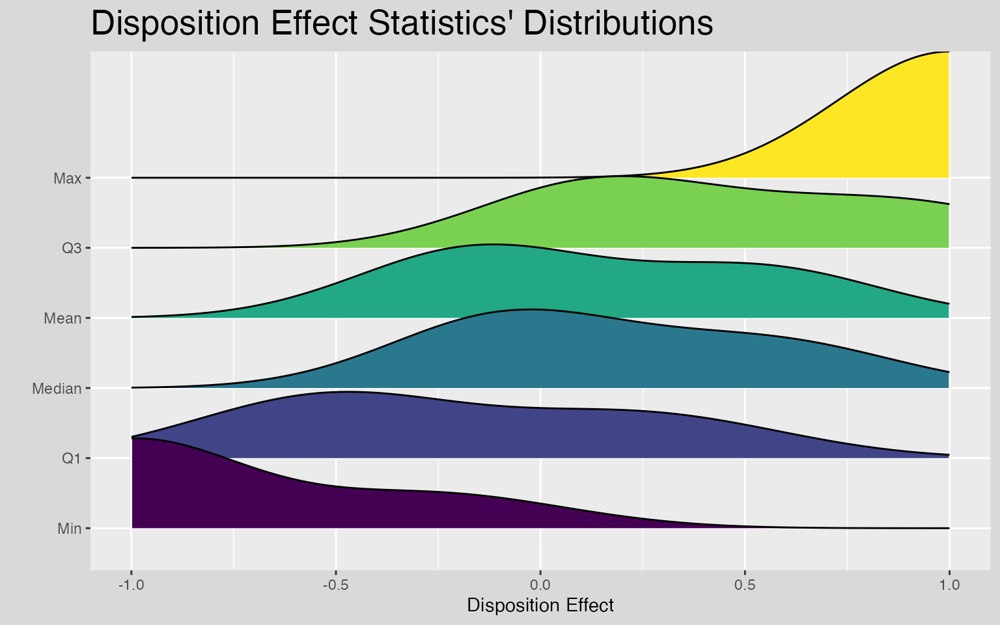
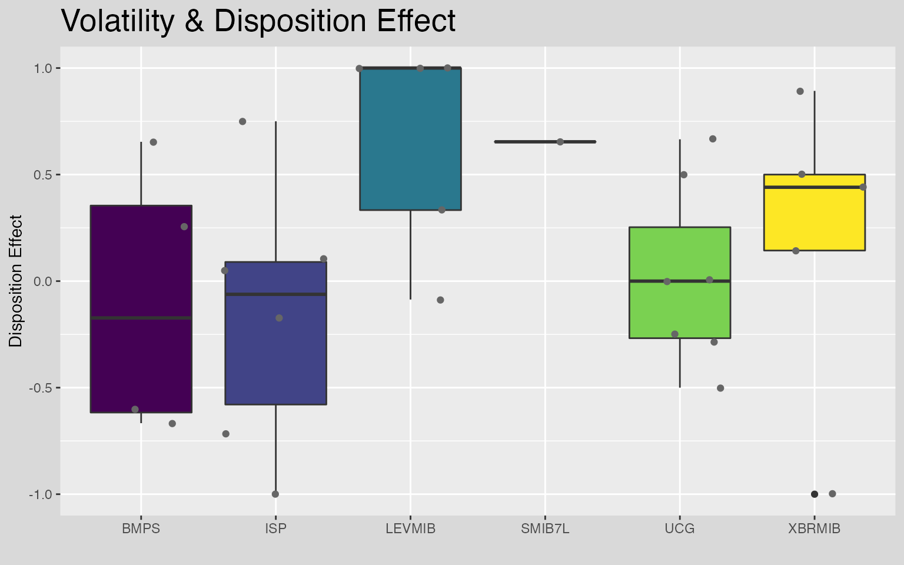

In recent years, an irrational phenomenon in financial markets is grabbing the attention of behavioral economists: the disposition effect. Firstly discovered by H. Shefrin and M. Statman (1985), the disposition effect consists in the realization that investors are more likely to sell an asset when it is gaining value compared to when it is losing value. A phenomenon which is closely related to sunk costs’ bias, diminishing sensitivity, and loss aversion.
From 1985 until now, the disposition effect has been documented in US retail stock investors as well as in foreign retail investors and even among professionals and institutions. By the time, it is a well-established fact that the disposition effect is a real behavioral anomaly that strongly influences the final profits (or losses) of investors. Furthermore, being able to correctly capture these irrational behaviors timely is even more important in periods of high financial volatility as nowadays.
The dispositionEffect package allows to quickly evaluate the presence of disposition effect’s behaviors of an investor based solely on his transactions and the market prices of the traded assets.
library(dispositionEffect)
library(dplyr)
library(tidyr)
library(lubridate)
library(skimr)
library(ggplot2)
library(ggridges)
library(gghalves)
The dataset DEanalysis is provided within the package allowing to reproduce a full analysis on the disposition effect.
help("DEanalysis")The disposition effect analysis is performed on two fundamental types of data frames:
portfolio transactions, that is all the financial transactions an investor did during a specific period of time. A single transaction is made up of 6 features: the investor id, the asset id, the type of the transaction (it can be a buy or a sell), the traded quantity, the traded price, and the datetime.
market prices, that is the prices found on the stock markets for each traded asset and each transaction datetimes.
First of all, we need to extract and understand the structure of the transaction dataset.
trx <- DEanalysis$transactions # transactions
head(trx)
#> investor type asset quantity price datetime
#> 1 44382 B 3NGL 15000 0.2540 2017-10-25 14:16:00
#> 2 44382 B 3NGL 5000 0.2485 2017-10-26 17:35:00
#> 3 44382 B 3NGL 4000 0.2400 2017-10-27 10:20:00
#> 4 44382 B GAS3L 23000 0.1880 2017-10-27 17:06:00
#> 5 44382 B 3NGL 5000 0.2214 2017-10-27 17:35:00
#> 6 44382 B 3NGS 130 32.7650 2017-10-30 17:35:00
skimr::skim(trx)| Name | trx |
| Number of rows | 4917 |
| Number of columns | 6 |
| _______________________ | |
| Column type frequency: | |
| character | 3 |
| numeric | 2 |
| POSIXct | 1 |
| ________________________ | |
| Group variables | None |
Variable type: character
| skim_variable | n_missing | complete_rate | min | max | empty | n_unique | whitespace |
|---|---|---|---|---|---|---|---|
| investor | 0 | 1 | 5 | 5 | 0 | 10 | 0 |
| type | 0 | 1 | 1 | 1 | 0 | 2 | 0 |
| asset | 0 | 1 | 1 | 6 | 0 | 337 | 0 |
Variable type: numeric
| skim_variable | n_missing | complete_rate | mean | sd | p0 | p25 | p50 | p75 | p100 | hist |
|---|---|---|---|---|---|---|---|---|---|---|
| quantity | 0 | 1 | 3081.49 | 15580.36 | 0 | 123.00 | 485.00 | 1850.00 | 652920 | ▇▁▁▁▁ |
| price | 0 | 1 | 878.15 | 3697.85 | 0 | 1.76 | 7.47 | 25.26 | 22130 | ▇▁▁▁▁ |
Variable type: POSIXct
| skim_variable | n_missing | complete_rate | min | max | median | n_unique |
|---|---|---|---|---|---|---|
| datetime | 0 | 1 | 2010-01-05 11:38:00 | 2018-12-18 13:24:00 | 2013-07-30 16:25:00 | 4766 |
The portfolio transaction dataset is made up of the six fundamental variables described above.
This real sample dataset contains transactions on 10 investors on 337 traded assets, from January 2010 until December 2018.
One important feature is the type variable. It states if a transaction is a “Buy” (B) or a “Sell” (S), and only this two values are allowed.
unique(trx$type)
#> [1] "B" "S"Moreover, as expected, not all the investors are active on the whole period of analysis.
# number of transactions of each investor over years
trx %>%
dplyr::mutate(year = lubridate::year(datetime)) %>%
dplyr::count(investor, year) %>%
dplyr::arrange(year) %>%
tidyr::pivot_wider(names_from = year, values_from = n) %>%
dplyr::left_join(dplyr::count(trx, investor), by = "investor")
#> # A tibble: 10 × 11
#> investor `2010` `2011` `2012` `2013` `2014` `2015` `2016` `2017` `2018` n
#> <chr> <int> <int> <int> <int> <int> <int> <int> <int> <int> <int>
#> 1 62NQ8 59 35 66 91 245 NA NA NA NA 496
#> 2 743Q1 64 190 239 NA NA NA NA NA NA 493
#> 3 784ZZ 164 26 9 119 45 70 27 29 11 500
#> 4 8ZQ32 196 79 35 41 56 24 46 18 4 499
#> 5 QZ31Q 37 389 56 NA NA NA NA NA NA 482
#> 6 QZ621 43 232 77 114 24 NA NA NA NA 490
#> 7 QZNZN 14 107 90 70 33 63 106 NA 7 490
#> 8 46Z68 NA NA NA NA NA NA 170 288 24 482
#> 9 44382 NA NA NA NA NA NA NA 75 415 490
#> 10 4Q17Z NA NA NA NA NA NA NA 202 293 495Clearly, they have similar number of transactions as a whole, but they traded on different years.
The market prices dataset needs only to have three variables: asset, datetime and price.
mkt <- DEanalysis$marketprices # market prices
head(mkt)
#> asset datetime price
#> 1 3BAL 2017-10-25 14:16:00 42.750
#> 2 3BAS 2017-10-25 14:16:00 15.750
#> 3 3BRL 2017-10-25 14:16:00 28.080
#> 4 3BRS 2017-10-25 14:16:00 19.980
#> 5 3CFL 2017-10-25 14:16:00 17.055
#> 6 3CFS 2017-10-25 14:16:00 24.505
skimr::skim(mkt)| Name | mkt |
| Number of rows | 258137 |
| Number of columns | 3 |
| _______________________ | |
| Column type frequency: | |
| character | 1 |
| numeric | 1 |
| POSIXct | 1 |
| ________________________ | |
| Group variables | None |
Variable type: character
| skim_variable | n_missing | complete_rate | min | max | empty | n_unique | whitespace |
|---|---|---|---|---|---|---|---|
| asset | 0 | 1 | 1 | 6 | 0 | 337 | 0 |
Variable type: numeric
| skim_variable | n_missing | complete_rate | mean | sd | p0 | p25 | p50 | p75 | p100 | hist |
|---|---|---|---|---|---|---|---|---|---|---|
| price | 0 | 1 | 162.7 | 1524.68 | 0 | 1.87 | 7 | 19.5 | 22336 | ▇▁▁▁▁ |
Variable type: POSIXct
| skim_variable | n_missing | complete_rate | min | max | median | n_unique |
|---|---|---|---|---|---|---|
| datetime | 0 | 1 | 2010-01-05 11:38:00 | 2018-12-18 13:24:00 | 2013-06-05 09:16:00 | 4766 |
Again, not all the assets prices are available in every year because we only need the market prices for those assets for the traded datetime (i.e. the datetime of the transactions dataset).
mkt %>%
dplyr::mutate(year = lubridate::year(datetime)) %>%
dplyr::count(asset, year) %>%
dplyr::arrange(year) %>%
tidyr::pivot_wider(names_from = year, values_from = n) %>%
head(10)
#> # A tibble: 10 × 10
#> asset `2010` `2011` `2012` `2013` `2014` `2015` `2016` `2017` `2018`
#> <chr> <int> <int> <int> <int> <int> <int> <int> <int> <int>
#> 1 A2A 267 552 218 271 321 131 129 227 271
#> 2 ACE 159 25 9 115 45 70 27 29 11
#> 3 ACP 159 25 9 115 45 70 27 29 11
#> 4 ACS 159 25 9 115 45 70 27 29 11
#> 5 AEF 210 519 154 181 78 131 129 29 18
#> 6 AEG 56 33 64 91 243 NA NA NA NA
#> 7 AGL 327 407 425 199 332 85 148 18 11
#> 8 AGRI 64 190 237 NA NA NA NA NA NA
#> 9 AIGO 193 79 35 41 56 24 46 18 4
#> 10 AKM 56 33 64 91 243 NA NA NA NA
Now, first proceed to analyze the behavior of a single investor.
# Investor QZ621
trx_QZ621 <- dplyr::filter(trx, investor == "QZ621") # transactions
mkt_QZ621 <- dplyr::filter(mkt, asset %in% unique(trx_QZ621$asset)) # market pricesBased solely on this two data frames it is possible to compute the so-called realized gains (RG), realized losses (RL), paper gains (PG), and paper losses (PL), as defined by L. Mazzucchelli et al. (2021).
To sum up the main concepts are the followings:
Realized Gain / Loss => whenever an investor closes a position in its portfolio in gain / loss
Paper Gain / Loss => all the open positions at the moment of the transaction, and all the partially closed positions.
The portfolio_compute is the core interface of the package and it is used to perform all the gains and losses computations.
p_res <- portfolio_compute(portfolio_transactions = trx_QZ621, market_prices = mkt_QZ621)
head(p_res)[, -5]
#> investor asset quantity price RG_count RL_count PG_count PL_count
#> 1 QZ621 DAX2S 0 0.000000 1 0 0 0
#> 2 QZ621 F 0 0.000000 3 2 1 1
#> 3 QZ621 LEVMIB 400 5.551628 32 25 223 93
#> 4 QZ621 MINI1L 0 0.000000 0 4 5 0
#> 5 QZ621 MINI2C 0 0.000000 0 1 0 0
#> 6 QZ621 MINI2F 0 0.000000 10 6 0 4
skimr::skim(p_res)| Name | p_res |
| Number of rows | 26 |
| Number of columns | 9 |
| _______________________ | |
| Column type frequency: | |
| character | 2 |
| numeric | 6 |
| POSIXct | 1 |
| ________________________ | |
| Group variables | None |
Variable type: character
| skim_variable | n_missing | complete_rate | min | max | empty | n_unique | whitespace |
|---|---|---|---|---|---|---|---|
| investor | 0 | 1 | 5 | 5 | 0 | 1 | 0 |
| asset | 0 | 1 | 1 | 6 | 0 | 26 | 0 |
Variable type: numeric
| skim_variable | n_missing | complete_rate | mean | sd | p0 | p25 | p50 | p75 | p100 | hist |
|---|---|---|---|---|---|---|---|---|---|---|
| quantity | 0 | 1 | -751.92 | 3926.64 | -20000 | 0 | 0 | 0.00 | 400 | ▁▁▁▁▇ |
| price | 0 | 1 | 1284.76 | 4542.57 | 0 | 0 | 0 | 0.00 | 17780 | ▇▁▁▁▁ |
| RG_count | 0 | 1 | 5.85 | 12.01 | 0 | 0 | 2 | 4.75 | 55 | ▇▁▁▁▁ |
| RL_count | 0 | 1 | 4.54 | 7.02 | 0 | 1 | 2 | 4.00 | 26 | ▇▁▁▁▁ |
| PG_count | 0 | 1 | 22.08 | 59.55 | 0 | 0 | 0 | 1.75 | 223 | ▇▁▁▁▁ |
| PL_count | 0 | 1 | 32.46 | 95.04 | 0 | 0 | 0 | 2.75 | 423 | ▇▁▁▁▁ |
Variable type: POSIXct
| skim_variable | n_missing | complete_rate | min | max | median | n_unique |
|---|---|---|---|---|---|---|
| datetime | 0 | 1 | 2011-02-01 16:46:00 | 2014-09-17 15:56:00 | 2012-02-15 14:03:00 | 26 |
Hence, the result is a data frame containing:
Once that gains and losses have been computed, it is finally possible to evaluate both the disposition effect of the investor and of each traded assets, where the disposition effect is defined as:
\[DE = \bigg(\frac{RG}{RG + PG}\bigg) - \bigg(\frac{RL}{RL + PL}\bigg)\]
The DE varies between -1 and 1. Positive DE values show the presence of disposition effect irrational behaviors, while negative values show the presence of opposite disposition effect behaviors. A value of zero show that no disposition effect exists.
You almost never want to compute the disposition effect directly via the disposition_effect function, but you will mostly rely on the quicker and easier disposition_compute interface, since it designed to handle many situations.
de <- disposition_compute(gainslosses = p_res)
head(de)
#> investor asset DE_count
#> 1 QZ621 DAX2S 1.00000000
#> 2 QZ621 F 0.08333333
#> 3 QZ621 LEVMIB -0.08637421
#> 4 QZ621 MINI1L -1.00000000
#> 5 QZ621 MINI2C -1.00000000
#> 6 QZ621 MINI2F 0.40000000As can be seen, disposition_compute calculates a value of disposition effect for each asset. In order to obtain the value of disposition effect of the investor, one can simply compute an aggregate statistic, such as the mean or the median, on the assets’ values.
To do this we can simply use once again disposition_compute specifying the desired aggregate_fun.
disposition_compute(gainslosses = p_res, aggregate_fun = mean, na.rm = TRUE)
#> investor DE_count
#> 1 QZ621 -0.2115755Moreover, by means of the disposition_summary function it is also easy to summarize the disposition effect behavior of the investor, obtaining common summary statistics.
de_stat <- disposition_summary(gainslosses = p_res)
de_stat
#> investor stat DE_count
#> 1 QZ621 Min -1.0000000
#> 2 QZ621 Q1 -0.6250000
#> 3 QZ621 Median 0.0000000
#> 4 QZ621 Q3 0.1284957
#> 5 QZ621 Mean -0.2115755
#> 6 QZ621 Max 1.0000000
#> 7 QZ621 StDev 0.5740599
Until now, we limited our analysis to the default parameters of portfolio_compute. However, this function has many different arguments that can be used both to fine tune the analysis and to perform more advanced calculations, such as the so-called portfolio driven disposition effect and the time series disposition effect.
Hence, we focus here on the usage of five fundamental different arguments.
Let’s start by the method argument. It is probably the most relevant parameter the user can control since it allows to perform five different types of analysis.
If set to “none”, no gains and losses are computed but the investor’s portfolio is updated at every transaction, resulting in the actual portfolio of the investors at time T (the end of the period).
portfolio_compute(portfolio_transactions = trx_QZ621, market_prices = mkt_QZ621, method = "none") %>%
head()
#> investor asset quantity price datetime
#> 1 QZ621 DAX2S 0 0.000000 2012-02-22 10:36:00
#> 2 QZ621 F 0 0.000000 2012-02-08 17:30:00
#> 3 QZ621 LEVMIB 400 5.551628 2011-07-25 13:41:00
#> 4 QZ621 MINI1L 0 0.000000 2011-12-08 17:19:00
#> 5 QZ621 MINI2C 0 0.000000 2011-12-16 09:54:00
#> 6 QZ621 MINI2F 0 0.000000 2012-05-31 17:18:00If set to one of “count”, “total”, “value”, or “duration”, gains and losses are computed for the corresponding method.
portfolio_compute(portfolio_transactions = trx_QZ621, market_prices = mkt_QZ621, method = "count") %>%
head()
#> investor asset quantity price datetime RG_count RL_count
#> 1 QZ621 DAX2S 0 0.000000 2012-02-22 10:36:00 1 0
#> 2 QZ621 F 0 0.000000 2012-02-08 17:30:00 3 2
#> 3 QZ621 LEVMIB 400 5.551628 2011-07-25 13:41:00 32 25
#> 4 QZ621 MINI1L 0 0.000000 2011-12-08 17:19:00 0 4
#> 5 QZ621 MINI2C 0 0.000000 2011-12-16 09:54:00 0 1
#> 6 QZ621 MINI2F 0 0.000000 2012-05-31 17:18:00 10 6
#> PG_count PL_count
#> 1 0 0
#> 2 1 1
#> 3 223 93
#> 4 5 0
#> 5 0 0
#> 6 0 4
portfolio_compute(portfolio_transactions = trx_QZ621, market_prices = mkt_QZ621, method = "total") %>%
head()
#> investor asset quantity price datetime RG_total RL_total
#> 1 QZ621 DAX2S 0 0.000000 2012-02-22 10:36:00 500 0
#> 2 QZ621 F 0 0.000000 2012-02-08 17:30:00 4000 3000
#> 3 QZ621 LEVMIB 400 5.551628 2011-07-25 13:41:00 46425 35450
#> 4 QZ621 MINI1L 0 0.000000 2011-12-08 17:19:00 0 4
#> 5 QZ621 MINI2C 0 0.000000 2011-12-16 09:54:00 0 1
#> 6 QZ621 MINI2F 0 0.000000 2012-05-31 17:18:00 10 6
#> PG_total PL_total
#> 1 0 0
#> 2 2000 1500
#> 3 101640 71585
#> 4 5 0
#> 5 0 0
#> 6 0 6
portfolio_compute(portfolio_transactions = trx_QZ621, market_prices = mkt_QZ621, method = "value") %>%
head()
#> investor asset quantity price datetime RG_value
#> 1 QZ621 DAX2S 0 0.000000 2012-02-22 10:36:00 0.006965944
#> 2 QZ621 F 0 0.000000 2012-02-08 17:30:00 0.006973225
#> 3 QZ621 LEVMIB 400 5.551628 2011-07-25 13:41:00 0.008168037
#> 4 QZ621 MINI1L 0 0.000000 2011-12-08 17:19:00 0.000000000
#> 5 QZ621 MINI2C 0 0.000000 2011-12-16 09:54:00 0.000000000
#> 6 QZ621 MINI2F 0 0.000000 2012-05-31 17:18:00 0.004442795
#> RL_value PG_value PL_value
#> 1 0.000000000 0.000000000 0.000000000
#> 2 -0.001190992 0.000678242 -0.001028584
#> 3 -0.008053899 0.583051555 -0.068406690
#> 4 -0.005921272 0.031142275 0.000000000
#> 5 -0.002220704 0.000000000 0.000000000
#> 6 -0.002014476 0.000000000 -0.001533113
portfolio_compute(portfolio_transactions = trx_QZ621, market_prices = mkt_QZ621, method = "duration") %>%
head()
#> investor asset quantity price datetime RG_duration RL_duration
#> 1 QZ621 DAX2S 0 0.000000 2012-02-22 10:36:00 28.51667 0.00000
#> 2 QZ621 F 0 0.000000 2012-02-08 17:30:00 5.00000 13.96667
#> 3 QZ621 LEVMIB 400 5.551628 2011-07-25 13:41:00 875.61667 2247.78333
#> 4 QZ621 MINI1L 0 0.000000 2011-12-08 17:19:00 0.00000 493.71667
#> 5 QZ621 MINI2C 0 0.000000 2011-12-16 09:54:00 0.00000 0.35000
#> 6 QZ621 MINI2F 0 0.000000 2012-05-31 17:18:00 46.65000 41.38333
#> PG_duration PL_duration
#> 1 0.000000e+00 0.000
#> 2 2.666667e-01 6.750
#> 3 1.004278e+04 1788.117
#> 4 4.633000e+02 0.000
#> 5 0.000000e+00 0.000
#> 6 0.000000e+00 7.300In particular:
count computes gains and losses as simple countstotal calculates gains and losses as the sum of the quantityvalue measures the expected percentage gains and losses based on pricesduration calculates the time in hours of held gains and losses.Instead, when method is set to “all”, then all the four measures are computed.
p_res_all <- portfolio_compute(portfolio_transactions = trx_QZ621, market_prices = mkt_QZ621, method = "all")
skimr::skim(p_res_all)| Name | p_res_all |
| Number of rows | 26 |
| Number of columns | 21 |
| _______________________ | |
| Column type frequency: | |
| character | 2 |
| numeric | 18 |
| POSIXct | 1 |
| ________________________ | |
| Group variables | None |
Variable type: character
| skim_variable | n_missing | complete_rate | min | max | empty | n_unique | whitespace |
|---|---|---|---|---|---|---|---|
| investor | 0 | 1 | 5 | 5 | 0 | 1 | 0 |
| asset | 0 | 1 | 1 | 6 | 0 | 26 | 0 |
Variable type: numeric
| skim_variable | n_missing | complete_rate | mean | sd | p0 | p25 | p50 | p75 | p100 | hist |
|---|---|---|---|---|---|---|---|---|---|---|
| quantity | 0 | 1 | -751.92 | 3926.64 | -20000.00 | 0.00 | 0.00 | 0.00 | 400.00 | ▁▁▁▁▇ |
| price | 0 | 1 | 1284.76 | 4542.57 | 0.00 | 0.00 | 0.00 | 0.00 | 17780.00 | ▇▁▁▁▁ |
| RG_count | 0 | 1 | 5.85 | 12.01 | 0.00 | 0.00 | 2.00 | 4.75 | 55.00 | ▇▁▁▁▁ |
| RL_count | 0 | 1 | 4.54 | 7.02 | 0.00 | 1.00 | 2.00 | 4.00 | 26.00 | ▇▁▁▁▁ |
| PG_count | 0 | 1 | 22.08 | 59.55 | 0.00 | 0.00 | 0.00 | 1.75 | 223.00 | ▇▁▁▁▁ |
| PL_count | 0 | 1 | 32.46 | 95.04 | 0.00 | 0.00 | 0.00 | 2.75 | 423.00 | ▇▁▁▁▁ |
| RG_total | 0 | 1 | 6460.62 | 15235.96 | 0.00 | 0.00 | 5.50 | 3300.00 | 58800.00 | ▇▁▁▁▁ |
| RL_total | 0 | 1 | 8317.46 | 15673.01 | 0.00 | 3.00 | 12.00 | 7500.00 | 60000.00 | ▇▁▁▁▁ |
| PG_total | 0 | 1 | 19834.27 | 76428.62 | 0.00 | 0.00 | 0.00 | 107.75 | 381200.00 | ▇▁▁▁▁ |
| PL_total | 0 | 1 | 333629.88 | 1665597.17 | 0.00 | 0.00 | 0.00 | 3225.00 | 8499500.00 | ▇▁▁▁▁ |
| RG_value | 0 | 1 | 0.01 | 0.03 | 0.00 | 0.00 | 0.00 | 0.01 | 0.15 | ▇▁▁▁▁ |
| RL_value | 0 | 1 | -0.01 | 0.02 | -0.08 | -0.01 | 0.00 | 0.00 | 0.00 | ▁▁▁▁▇ |
| PG_value | 0 | 1 | 0.06 | 0.15 | 0.00 | 0.00 | 0.00 | 0.00 | 0.58 | ▇▁▁▁▁ |
| PL_value | 0 | 1 | -7.11 | 36.03 | -183.78 | -0.03 | 0.00 | 0.00 | 0.00 | ▁▁▁▁▇ |
| RG_duration | 0 | 1 | 654.71 | 2607.51 | 0.00 | 0.00 | 15.64 | 42.60 | 13305.53 | ▇▁▁▁▁ |
| RL_duration | 0 | 1 | 541.94 | 1958.09 | 0.00 | 7.64 | 21.87 | 40.02 | 9871.20 | ▇▁▁▁▁ |
| PG_duration | 0 | 1 | 833.62 | 2384.51 | 0.00 | 0.00 | 0.00 | 24.66 | 10042.78 | ▇▁▁▁▁ |
| PL_duration | 0 | 1 | 1120.36 | 3197.35 | 0.00 | 0.00 | 0.00 | 115.55 | 13298.93 | ▇▁▁▁▁ |
Variable type: POSIXct
| skim_variable | n_missing | complete_rate | min | max | median | n_unique |
|---|---|---|---|---|---|---|
| datetime | 0 | 1 | 2011-02-01 16:46:00 | 2014-09-17 15:56:00 | 2012-02-15 14:03:00 | 26 |
It is important to notice that the disposition effect is only meaningful for methods coount and total. In all the other cases the disposition difference is used instead.
disposition_compute(gainslosses = p_res_all, aggregate_fun = mean, na.rm = TRUE)
#> investor DE_count DE_total DE_value DD_duration
#> 1 QZ621 -0.2115755 -0.2048348 -0.1806207 112.7756The allow_short argument, instead, allows for short selling transactions. If set to FALSE, short selling will not be allowed and no gains or losses will be computed when this happens.
The time_threshold argument is a fundamental fine tuning parameter. It essentially controls the minimum time distance necessary to compute gains and losses.
By default it is set to “0 mins”, implying that gains and losses are always computed.
However, this may not be desirable since investor’s behaviors are not expected to change with very high frequencies.
Hence, for instance, setting it to “60 mins” states that gains and losses are calculated only if 60 minutes are passed from the last transaction.
portfolio_compute(
portfolio_transactions = trx_QZ621,
market_prices = mkt_QZ621,
time_threshold = "60 mins"
)This parameter is very important also because it allows to somewhat filters human operations from machines operations, without actually removing them from the analysis.
Different units may be specified.
The argument exact_market_prices is set to TRUE by default, since it is expected that the user provides market prices of each traded asset for each transaction datetime.
However, when this is not the case, one may want to set it to FALSE to allow for non exact market prices. It essentially means that the nearest price in time is used.
portfolio_compute(
portfolio_transactions = trx_QZ621,
market_prices = mkt_QZ621,
exact_market_prices = FALSE
)Note, however, that with exact_market_prices set to FALSE, unreliable results may be obtained when transactions occur with low frequency, since the market prices used as reference for the calculation may be outdated.
The verbose and progress arguments may be useful for interactive use and for very long calculations on large portfolios of transactions.
portfolio_compute(
portfolio_transactions = trx_QZ621,
market_prices = mkt_QZ621,
verbose = c(1, 1),
progress = TRUE
)See Portfolio Driven Disposition Effect and Time Series Disposition Effect for a guide on the usage of other, more advanced, arguments.
Although the analysis of disposition effect can be performed simply on a single investor, the real advantages of this analysis derive from the capacity to study and understand the behaviors of many different investors that actively operate on the financial markets.
Hence, to fully grasp the power of dispositionEffect package, we can proceed to jointly analyze all the 10 investors’ transactions that are available into the DEanalysis dataset.
Furthermore, if you are interested in computing the disposition effect on large datasets, please see Disposition Effect in Parallel to understand how the benefits of parallel computing can be exploited within this framework.
# list of transactions separated by investor
trx_list <- trx %>%
dplyr::group_by(investor) %>%
dplyr::group_split()This time to calculate gains and losses for each investor’s portfolio we can simply map portfolio_compute on the list of transactions, specifying all the other necessary arguments as usual.
p_res_full <- purrr::map(trx_list, portfolio_compute, market_prices = mkt)The same procedure can be used to quickly compute the disposition effect on each resulting portfolio.
| Name | de |
| Number of rows | 576 |
| Number of columns | 3 |
| _______________________ | |
| Column type frequency: | |
| character | 2 |
| numeric | 1 |
| ________________________ | |
| Group variables | None |
Variable type: character
| skim_variable | n_missing | complete_rate | min | max | empty | n_unique | whitespace |
|---|---|---|---|---|---|---|---|
| investor | 0 | 1 | 5 | 5 | 0 | 10 | 0 |
| asset | 0 | 1 | 1 | 6 | 0 | 337 | 0 |
Variable type: numeric
| skim_variable | n_missing | complete_rate | mean | sd | p0 | p25 | p50 | p75 | p100 | hist |
|---|---|---|---|---|---|---|---|---|---|---|
| DE_count | 1 | 1 | 0.06 | 0.59 | -1 | -0.29 | 0.01 | 0.5 | 1 | ▃▃▇▅▅ |
As it is shown, de is a data frame containing disposition effect results (variable DE_count) on the 10 investors for all their 337 traded assets.
Also the average disposition effects of the investors can be easily obtained,
de_mean <- purrr::map(p_res_full, disposition_compute, aggregate_fun = mean, na.rm = TRUE) %>%
dplyr::bind_rows() %>%
dplyr::arrange(dplyr::desc(DE_count))
de_mean
#> investor DE_count
#> 1 46Z68 0.6705760963
#> 2 8ZQ32 0.5318072092
#> 3 62NQ8 0.5049538124
#> 4 44382 0.4917751394
#> 5 743Q1 0.0005595955
#> 6 QZNZN -0.0089654513
#> 7 4Q17Z -0.1678092462
#> 8 QZ621 -0.2115754843
#> 9 QZ31Q -0.2149247491
#> 10 784ZZ -0.2611998354and the disposition effect summary statistics.
de_stat <- purrr::map(p_res_full, disposition_summary) %>%
dplyr::bind_rows()
head(de_stat, 7)
#> investor stat DE_count
#> 1 44382 Min -0.3333333
#> 2 44382 Q1 0.3141026
#> 3 44382 Median 0.5000000
#> 4 44382 Q3 0.6500000
#> 5 44382 Mean 0.4917751
#> 6 44382 Max 1.0000000
#> 7 44382 StDev 0.3506436It is clearer now that some investors display irrational behaviors while other don’t.
The graphical inspection of disposition effect results allows to easily understand what is going on and to spot possible interesting behaviors.
One may want to investigate the overall distribution, or the distributions of every statistics obtained.
ggplot(de, aes(x = DE_count)) +
geom_histogram(aes(y = ..density..), color = "darkblue", fill = "yellow") +
geom_density(aes(y = ..density..), color = "darkblue", fill = "yellow", alpha = 0.4) +
scale_x_continuous(limits = c(-1, 1)) +
theme(
panel.background = element_rect(fill = "grey92"),
plot.background = element_rect(fill = "grey85", colour = NA),
plot.title = element_text(size = 20),
legend.position = "none"
) +
labs(title = "Disposition Effect Distribution", x = "Disposition Effect", y = "Frequency")
ggplot(de_stat, aes(x = DE_count, y = stat, fill = stat)) +
geom_density_ridges() +
scale_fill_viridis_d() +
scale_x_continuous(limits = c(-1, 1)) +
theme(
panel.background = element_rect(fill = "grey92"),
plot.background = element_rect(fill = "grey85", colour = NA),
plot.title = element_text(size = 20),
legend.position = "none"
) +
labs(
title = "Disposition Effect Statistics' Distributions",
x = "Disposition Effect", y = ""
)
Or deeper, one can also analyze investors’ behaviors on some specific assets to understand whether there exists on the market assets that are more subject to irrationality.
top5_assets <- trx %>%
dplyr::count(asset) %>%
dplyr::arrange(dplyr::desc(n)) %>%
dplyr::slice(1:6) %>%
dplyr::pull(asset)
dplyr::filter(de, asset %in% top5_assets) %>%
ggplot(aes(x = asset, y = DE_count, fill = asset)) +
geom_half_boxplot(center = TRUE, width = 0.8, nudge = 0.02) +
geom_half_violin(side = "r", nudge = 0.02, alpha = 0.8) +
geom_jitter(color = "grey40") +
scale_fill_viridis_d() +
theme(
panel.background = element_rect(fill = "grey92"),
plot.background = element_rect(fill = "grey85", colour = NA),
plot.title = element_text(size = 20),
legend.position = "none"
) +
labs(title = "Volatility & Disposition Effect", x = "", y = "Disposition Effect")
For more tutorials on disposition effect visit dispositionEffect.